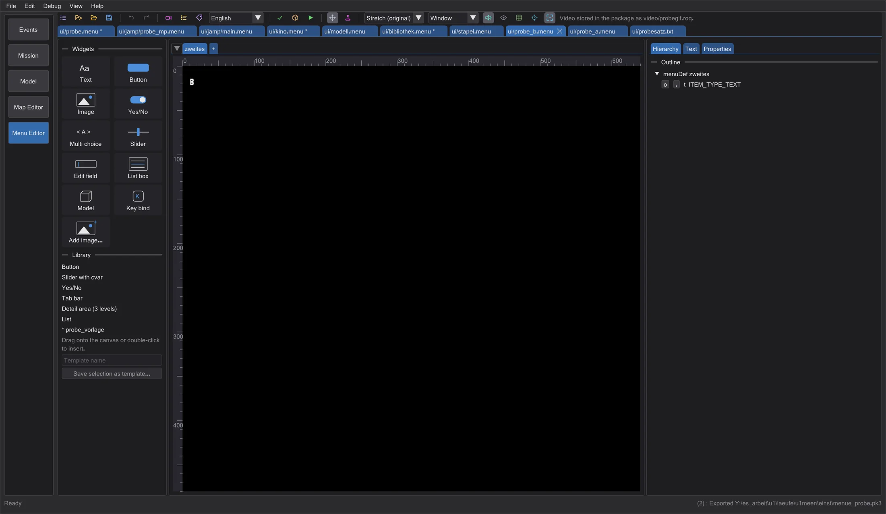
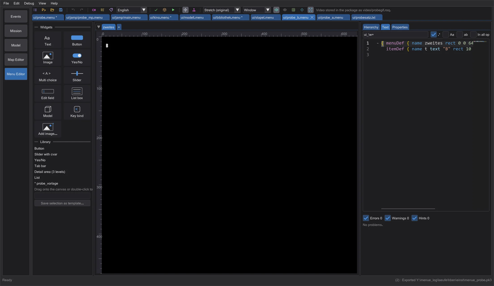
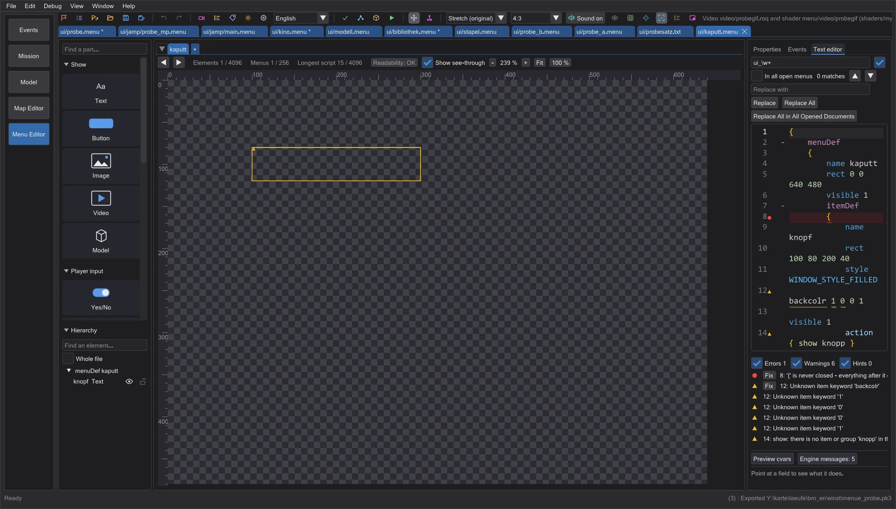
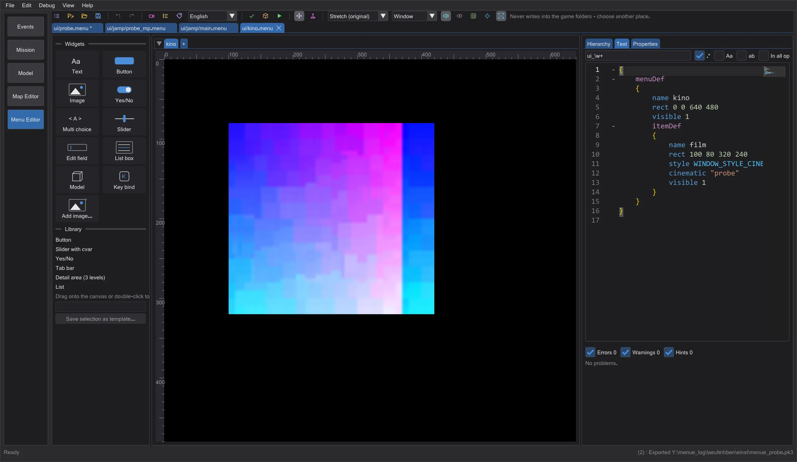
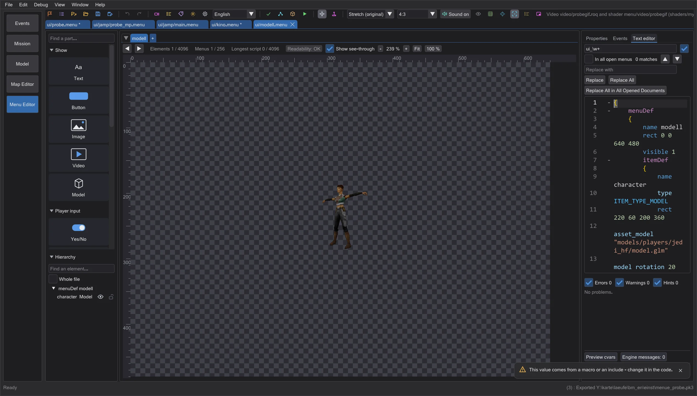
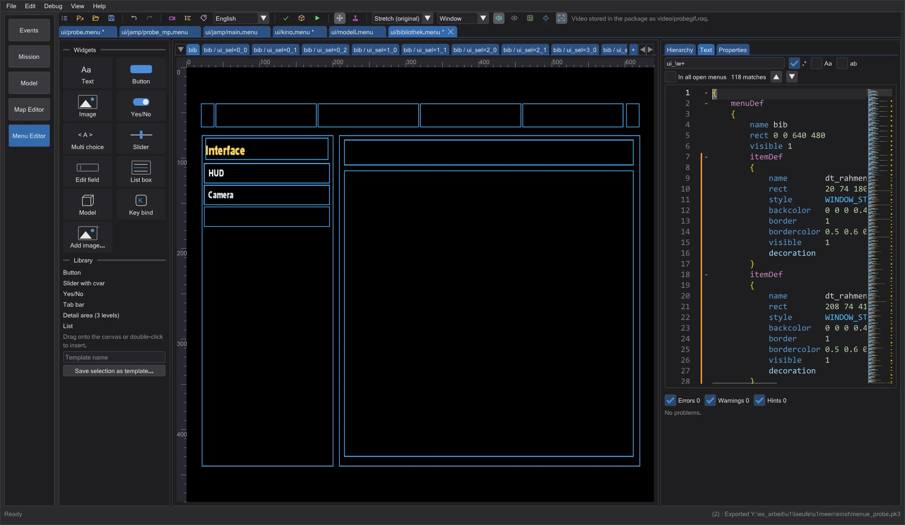
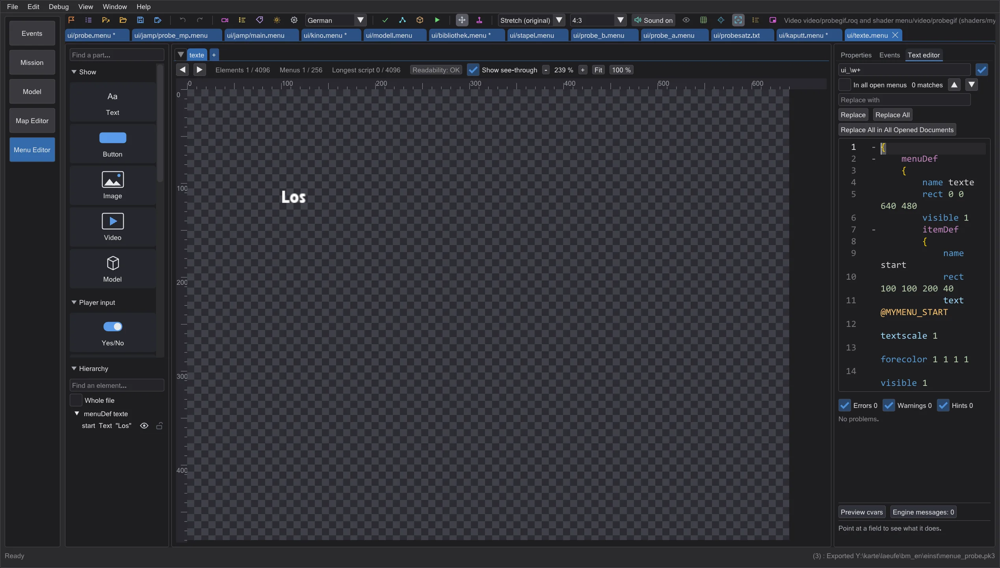

Menu editor: preview, checks and packaging
The right column with tabs, the live diagnosis while typing, videos, 3D models and sabers like in the game, the widget library, texts in several languages, sounds, the checks for the game, a test in the game and fonts from TrueType.
Layout: canvas at full height#




The right column holds Hierarchy (menus, groups and items; the eye hides an item in the preview only, the lock keeps it from moving, dragging changes the drawing order), Text (the code editor with the problems below) and Properties (properties, cvars, engine messages and the script log as sections). Drag the divider to change the width; the tab and the width are remembered. A click on the canvas moves the text cursor to the itemDef even while another tab is open - switch to Text and the line is there. The old layout with the text at the bottom is in the preferences (Text editor at the bottom (old layout)), as is Wrap long lines in the text editor (otherwise long lines scroll sideways with Shift + mouse wheel).
Live diagnosis#

While you type, the menu is checked in the background a moment later. A wavy line marks the exact place - red for errors, yellow for warnings, blue for hints - and the margin shows a symbol; hovering shows the message: the game's own wording where there is one (Unknown item keyword 'backcolr') plus a short explanation. The problems list below the text jumps to the place and selects the item on the canvas; items with errors and warnings are outlined there.
- Braces
{ }and( )and quotation marks: missing, extra or mismatched - both the opening and the closing place; the indentation tells where a brace is missing. - Unknown keywords per version, numbers where single player silently reads 0, duplicate menuDef names, targets of open/close/show/hide/setfocus that do not exist, cvars that look like a typo of a known cvar.
- The checks for the game (the same rules as Check for the game): limits, items that are never visible, missing files.
- Fix in the list or Ctrl+. at the cursor applies a quick fix where the answer is clear: insert the missing brace, the right keyword, a similar existing file, the known cvar. Undo takes it back.
Videos, models and sabers#




cinematic and videoMap play RoQ videos; Import video converts a video or GIF to RoQ and puts it into video/. ITEM_TYPE_MODEL shows the model with the camera, light and rotation of the game; the character menu builds the player from the cvars and the feeders (species, heads, colours) like the game. Sabers lie on their side with hilt and blades from the .sab: length, radius, number of blades, single/staff, colour - glow and core drawn like the renderer. Movie Duels follows cg_SFXSabers with all its styles (see the next page).
Library, detail area and menu sets#

Library holds ready parts (button, slider with cvar, yes/no, tab bar, detail area in three levels, list); drag one onto the canvas or double-click it. Save selection as template turns the selection into your own template. Open whole menu set (menus.txt) opens every file of menus.txt; open in a script then switches to the file of the menu.
Texts in several languages and sounds#

Texts lists your own @-texts in every language of the game and the @-keys the menu uses (missing ones can be created with one click). They are written into the package as strings/<language>/<PACKAGE>.str (Jedi Academy, Movie Duels) or strip/<package>.sp (Jedi Outcast). The language box next to it switches the preview. In Interact the menu plays its sounds like the game - soundLoop, play, playlooped, the focus sound of the item or of assetGlobalDef (Sound on in the toolbar switches them off).
Check, export and test in the game#
Check for the game checks all open menus for Jedi Academy, Jedi Outcast and Movie Duels: the limits of each version (items per menu, menus, script length, multi values, colour ranges, list columns - the game drops what is beyond), items that are never visible, missing images, shaders, models, videos, fonts and sounds, and keywords or item types another version does not know. Export .pk3 writes all open menus or, with Export changes only, only the changed ones - each time with your package (images, videos, texts, fonts) and with a warning if the game would lose something.
Test in game puts the changed menus into menuetest in the settings folder - never into the game folder - and starts the game program found next to the game folders with fs_homepath pointing there, so your files replace the game's. A program that cannot be given its own folder asks before anything is written into a mod folder.
Fonts from TrueType#
Font from TTF turns a .ttf or .otf into a game font: fonts/<name>.fontdat (the exact format the game reads) and fonts/<name>.tga with all characters of the menu texts (Windows-1252). Both go into the package; the preview uses them at once.